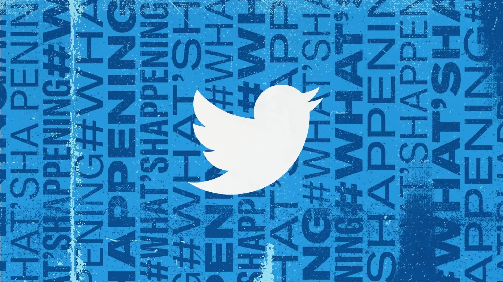
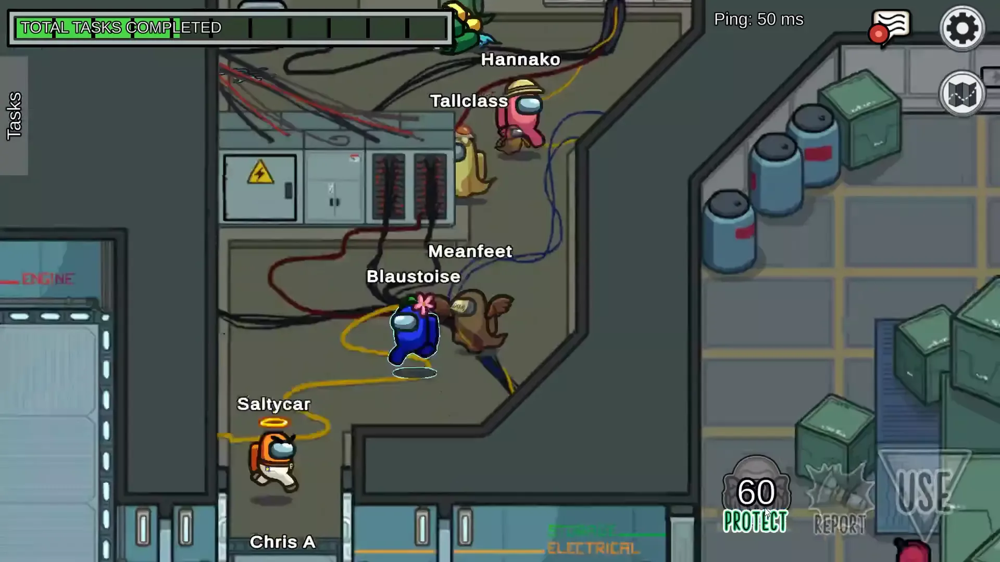

These paragraphs are randomly generated.The paper was blank. It shouldn't have been. There should have been writing on the paper, at least a paragraph if not more. The fact that the writing wasn't there was frustrating. Actually, it was even more than frustrating. It was downright distressing.
Nobody really understood Kevin. It wasn't that he was super strange or difficult. It was more that there wasn't enough there that anyone wanted to take the time to understand him. This was a shame as Kevin had many of the answers to the important questions most people who knew him had. It was even more of a shame that they'd refuse to listen even if Kevin offered to give them the answers. So, Kevin remained silent, misunderstood, and kept those important answers to life to himself.

A social media platform with the primary goal of connecting individuals and allowing them to share their ideas with a large audience.
ExploreA platform that allows users to communicate with friends, work colleagues, and strangers online by creating free accounts.
Explore
A teamwork game in which you must work together to determine who can and cannot be trusted among the players.
Explore